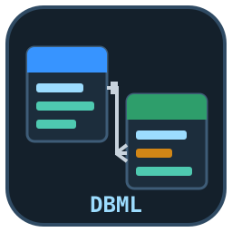
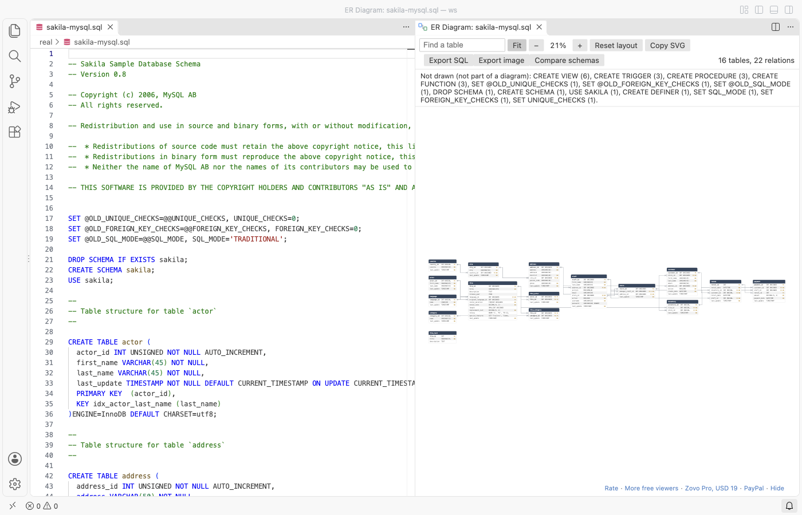
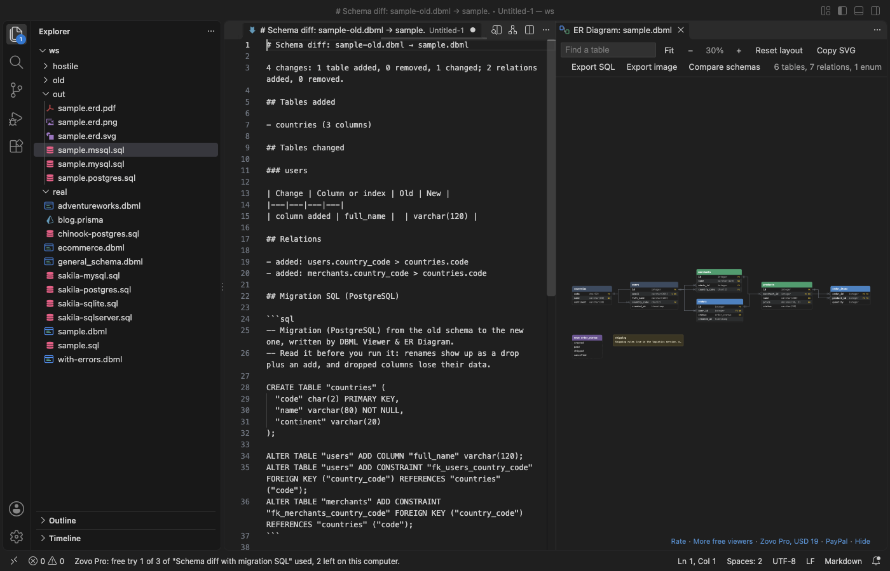

DBML Viewer & ER Diagram (DBML Preview, SQL to ER Diagram, ERD)
DBML Viewer & ER Diagram (DBML Preview, SQL to ER Diagram, ERD), a VS Code extension by Zovo
Zovo Pro: USD 19 once, every Zovo tool. The diagram, the DBML language support and Copy SVG are free, with no limit.
Free, MIT license. Needs VS Code 1.90.0 or newer. Extension ID zovo.zovo-dbml-viewer, version 0.1.1.
A DBML viewer that draws your schema as an ER diagram beside the editor and redraws it as you type. It also turns SQL into an ER diagram: open a PostgreSQL, MySQL, SQL Server or SQLite file with CREATE TABLE statements and click the diagram button. Prisma schemas work too. No sign-in, no network, no telemetry.

Questions people ask
Is DBML Viewer & ER Diagram (DBML Preview, SQL to ER Diagram, ERD) free?
Yes. DBML Viewer & ER Diagram (DBML Preview, SQL to ER Diagram, ERD) is free and MIT licensed.
How do I install DBML Viewer & ER Diagram (DBML Preview, SQL to ER Diagram, ERD)?
Click "Install in VS Code" above, or search for zovo.zovo-dbml-viewer in the Extensions view.
What you get
- Live DBML preview. Open a
.dbmlfile and click the diagram button in the editor title bar (or run DBML Viewer: Open ER Diagram). Tables show their columns and types with PK, FK, unique and not-null markers; enums and sticky notes have their own boxes. - Relations with crow's foot ends. One-to-one, one-to-many and many-to-many lines are routed at right angles. Hover a line to highlight both columns and see the relation and its
ON DELETEaction. - Automatic layout you can change. Referenced tables sit on the left and the tables that point at them on the right, with no overlaps. Drag a table to move it; the positions are kept for each file. Reset layout starts over. Schemas with 200 tables or more get a grid ordered by relation.
- Find your way. Zoom with Ctrl or Cmd + scroll, pan by dragging the background, Fit to see everything, search a table by name, and click a table or a column to jump to its line.
- Colors.
headercoloron a table, or one color perTableGroup. Light, dark and high contrast themes. - Copy SVG. Puts the diagram on the clipboard as an SVG image, for docs and pull requests.
SQL to ER diagram
The same button shows up on .sql files that create tables. It reads CREATE TABLE with column types, PRIMARY KEY, NOT NULL, UNIQUE, DEFAULT, AUTO_INCREMENT, IDENTITY, SERIAL and REFERENCES; table constraints; ALTER TABLE ... ADD [CONSTRAINT] FOREIGN KEY; CREATE INDEX; CREATE TYPE ... AS ENUM; COMMENT ON; quoted names with "", backticks or []; GO and DELIMITER. Statements that do not describe tables (INSERT, views, functions) are skipped and listed under the toolbar.

DBML language support
- Syntax colors for
.dbmlfiles. - Problems with line and column: an unknown keyword, a missing
}, aRefto a table that does not exist, a column that is not in its table. - Outline of tables, columns, enums and groups.
- Go to definition: Ctrl or Cmd + click
users.idin aRefto jump to the column.
The reader covers Project, Table with alias and settings, columns with pk, increment, unique, not null, null, default, note and inline ref, indexes (composite and pk), Ref in short and long form with <, >, - and <> plus delete and update actions, composite references, Enum, TableGroup, TablePartial, sticky Notes, schema names, quoted names, comments and multi-line strings.
Zovo Pro tools
Three tools for database work are part of Zovo Pro. Each has 3 free tries on your computer, and a try is used only when the tool produced its result (a file written, a report on screen). Escape or Cancel never uses one.
| Tool | Free | Zovo Pro |
|---|---|---|
| Live ER diagram for DBML, SQL and Prisma, layout, search, Copy SVG, DBML language support | yes | yes |
Export SQL: DBML to CREATE TABLE scripts for PostgreSQL, MySQL, SQL Server or SQLite (types, keys, indexes, enums, foreign keys, comments), and SQL DDL to DBML | 3 tries | yes |
| Export the diagram: high-resolution PNG, SVG or a vector PDF, or a Markdown data dictionary (column, type, keys, nullable, default and note for every table) | 3 tries | yes |
Schema diff: compare two DBML or SQL files, list the tables, columns, indexes and relations added, removed and changed, and write the migration SQL (ALTER TABLE ...) for your database | 3 tries | yes |

Zovo Pro is USD 19 once and turns on the Pro tools in every Zovo extension. Nothing about Pro shows when you open a file; it only comes up when you click one of the three tools. To hide the buttons, set dbmlViewer.showProTools to false.
Settings
| Setting | Default | What it does |
|---|---|---|
dbmlViewer.showProTools | true | Show the Export SQL, Export image and Compare schemas buttons |
dbmlViewer.showSupportLinks | true | Show the small links at the bottom of the diagram |
dbmlViewer.askForRating | true | Ask once, after a few days of use, for a rating |
Notes
- Not affiliated with Holistics, dbdiagram.io or dbdocs.io. DBML is an open format by Holistics; this extension has its own reader and does not use their code.
- The SQL reader is made for schema files. It reads what describes tables and keys and skips the rest; it does not run or check SQL.
- Files up to 8 million characters are read. Reading runs in a background worker with a time limit, so a broken or huge file cannot freeze the editor.
Guides
- Export an ER diagram as PNG or PDF from VS Code
- Draw an ER diagram from a DBML or Prisma file in VS Code
Install DBML Viewer & ER Diagram (DBML Preview, SQL to ER Diagram, ERD)
Click the button to open VS Code and install it, or press Ctrl+P (Cmd+P on macOS) in VS Code and run ext install zovo.zovo-dbml-viewer.
Free, MIT license. Needs VS Code 1.90.0 or newer. Extension ID zovo.zovo-dbml-viewer, version 0.1.1.
Source code and issues are on GitHub.
Zovo Pro and support
Zovo Pro: USD 19 once, every Zovo viewer. It turns on the Pro tools in this extension and in the other Zovo extensions you use. The free features stay free.
After a card payment your license key shows on the next page. Paste it with the command "Zovo Pro: Enter a key".
You can also support the work with no Pro:
Need your format supported?
Open a format request with a sample file, and I reply there whether it can be done. For USD 299 once, through this GitHub Sponsors tier, I add your file format or a missing feature to this extension, with tests, within 7 days.